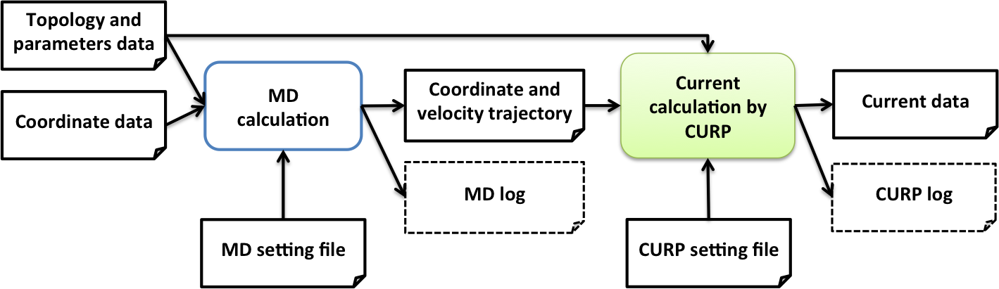

***************************************************************
CURrent calculation for Proteins (CURP)
version 1.1
Release date: June 30, 2017.
COPYRIGHT Ⓒ 2012, 2013, 2014, 2015-2017.
Yamato Laboratory, Nagoya University. All rights reserved.
URL: http://www.comp-biophys.com/yamato-lab/curp.html
Contact email: yamato@nagoya-u.jp
AUTHORS:
version 1.1
Takahisa YAMATO, Takakazu ISHIKURA, Kunitaka Ota, Tatsuya SAKAI
version 1.0
Takahisa YAMATO, Takakazu ISHIKURA, Yuki IWATA
version 0.1
Takahisa YAMATO, Tatsuro HATANO, Takakazu ISHIKURA
TERMS and CONDITIONS:
Yamato Laboratory, Nagoya University (hereinafter referred to
as "Yamato Lab") has developed the computational tool for the
analysis of the following physical properties of proteins: (1)
the atomic stress tensor and (2) the vibrational energy flow.
The computational tool is referred to as "CURP" (CURrent
calculation for Proteins), which includes the set of programs
and the manuals. CURP is provided to a person who shall comply
with the following Terms and Conditions ("Person" here can be
an individual, an institution or a corporation and is
hereinafter referred to as the "user".).
The use of (A) CURP, (B) copied or modified CURP and (C) CURP
incorporated into another software by the user is permitted for
the user's own purposes. If the user wishes to use CURP for a
third party, the user should contact Yamato Lab directly in
advance.
PUBLICATION OF RESULTS
The user must indicate that CURP was used in the following
cases:
(1) when the user publishes a result obtained by using (A) CURP
(B) copied or modified CURP or (C) software incorporating CURP
(2) when the user publishes a modified part of CURP.
NO WARRANTY
CURP is provided as is, and Yamato Lab does not warrant or
guarantee the quality, performance, or any outcomes obtained by
running CURP for the user. The user agrees that the user
downloads, saves or uses CURP on user's own responsibility and
if any problem occurs through downloading, saving or using CURP,
the user shall be responsible for all consequences, including
compensation to any third party.
VIOLATION of the TERMS and CONDITIONS
If the user breaches the Terms and Conditions, CURP (including
copied or modified CURP) must be uninstalled from the user's
machine.
***************************************************************
Please cite the following references when you use the CURP program.
T.Ishikura, Y.Iwata, T.Hatano and T.Yamato, “Energy exchange network of inter-residue interactions within a thermally fluctuating protein molecule: A compuational study” *J. Comput. Chem. 36:1709-1718 (2015).
T.Ishikura, T.Hatano and T.Yamato, “Atomic stress tensor analysis of proteins”, Chem. Phys. Lett. 539:144-150 (2012).
T.Yamato, “Energy flow pathways in photoactive yellow proteins”, in Proteins: energy, heat, and signal flow, eds. D.M. Leitner & J.E. Straub, pp. 129-147, (2009), Taylor and Francis.
T.Ishikura and T.Yamato, “Energy transfer pathways relevant for long-range intramolecular signaling of photosensory protein revealed by microscopic energy conductivity”, Chem. Phys. Lett. 432:533-537, (2006).
D.Leitner and T. Yamato, “Locating energy transport networks in proteins” (to be submitted)
The physical properties of condensed matter systems can be illustrated at the microscopic scale by evaluating the continuum variables in atomistic simulations. Among condensed matter systems, native protein molecules are particularly interesting in that they perform biological functions via an energy relaxation process from the non-equilibrium state to the equilibrium state in response to external perturbations such as light illumination and ligand binding. We can characterize native proteins in terms of continuum variables and provide biophysical grounds for the molecular mechanisms of protein functions. The values of the continuum variables vary from site to site in the protein molecule of interest, reflecting its inhomogeneity and anisotropy. Therefore, we can expect to find functionally important sites by analyzing the 3D field of the continuum variables in a protein molecule. For instance, we analyzed electron-tunneling currents in proteins and discovered a key residue for the electron transfer reaction in DNA photolyases[1]. Other examples are the analysis of the energy-transfer pathway in a photoactive yellow protein[2,3], and the identification of the “epicenter” of the protein quake in a photoactive yellow protein via stress tensor analysis[4]. Note that the first quantity is related to the electron flow, the second is related to the energy flow, and the third is related to the linear momentum flow.
The CURrent calculation for Proteins (CURP) program is written in Python and FORTRAN; it reads (1) the parameters of the force-field functions and the molecular topology data and (2) the atomic coordinates and velocities from the molecular dynamics trajectory. These are then used to calculate the atomic stress tensors. The AMBER format is supported for the current version[5]. Note that it is possible to convert Gromacs topology and trajectory files to Amber format with the aid of external programs such as ParmEd and VMD (see CURP top page).
References:
[1] Y Miyazawa, H Nishioka, K Yura, T Yamato, Biophys. J. 94 (2008) 2194-203.
[2] T Ishikura, T Yamato, Chem. Phys. Lett. 432 (2006) 533-37.
[3] T Yamato, in: D.M. Leitner, J.E. Straub (Eds.), Proteins : energy, heat and signal flow, Taylor and Francis, New York, 2009, pp.129-47.
[4] K Koike, K Kawaguchi, T Yamato, Phys Chem Chem Phys 10 (2008) 1400-5.
[5] T Ishikura, T Hatano, T Yamato, Chem. Phys. Lett. 539 (2012) 144-50.
The CURP program is designed for the analysis of (1) energy flow during vibrational energy relaxation and (2) atomic stress tensors or the flow of linear momenta in the thermally fluctuating protein media. The flowchart of the CURP calculation procedure is shown below.
{kind=link}